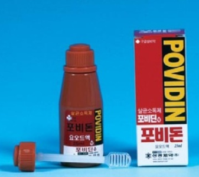
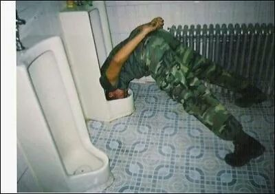
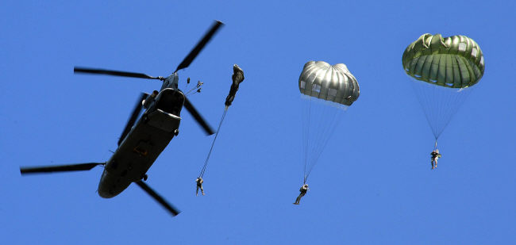

Reason #1: The Unidentified Red Medicine
Being a member of Special Forces means a lot of possible injuries and wounds. So, I had a lot of injuries and wounds while training.
Typically, I had an ACL injury once and I couldn’t even walk. But I had to keep walking since the colonel was watching me
I found out my whole left leg was bleeding later on so that I met a medic at my unit that night.
Surprisingly, the medic did nothing much but applied this red medicine on my leg.
After a while, I realized that the red medicine named ‘Povidin’ was used for any types of wounds.
Even there was a joke in military that the medic always gives you the Povidin, not a proper prescription, no matter what injuries you have.
This was how they treated Special Forces.

Reason #2: Bullying At Its Finest
It was the first day I was deployed to my unit. I was introduced to many senior soldiers there.
One of them just walked up to me and aggressively said, “I don’t like the way you’re standing in front of me.
I can make you a disabled person in one second.”
Instead of feeling scared to his statement, I felt it was ridiculous and wanted to punch him in his face really.
Of course, I had to say I was sorry and then I corrected the way I was standing, knowing what was wrong with it.
But it was just beginning. I think I heard all the cursing and physical abuse I can possibly get for the rest of my life at military. How sweet.

Reason #3: Jumping Out of a Plane For $200
The best part of being Special Forces is to jump off a plane with a parachute. I was trained for three weeks to jump with a parachute.
I can tell it was the most physically challenging three weeks in my life because we had to do a lot of physical training along with various landing skills.
I still remember the church a day before the jump was super crowded – I guess people were scared to death before jumping.
To be honest, jumping out of a plane is something you never get used to – It is scary to death every time you do.
I got paid $200 for each jump and talked to myself, “My life is just worth $200? That’s sad and messed up!”
